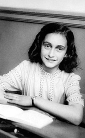
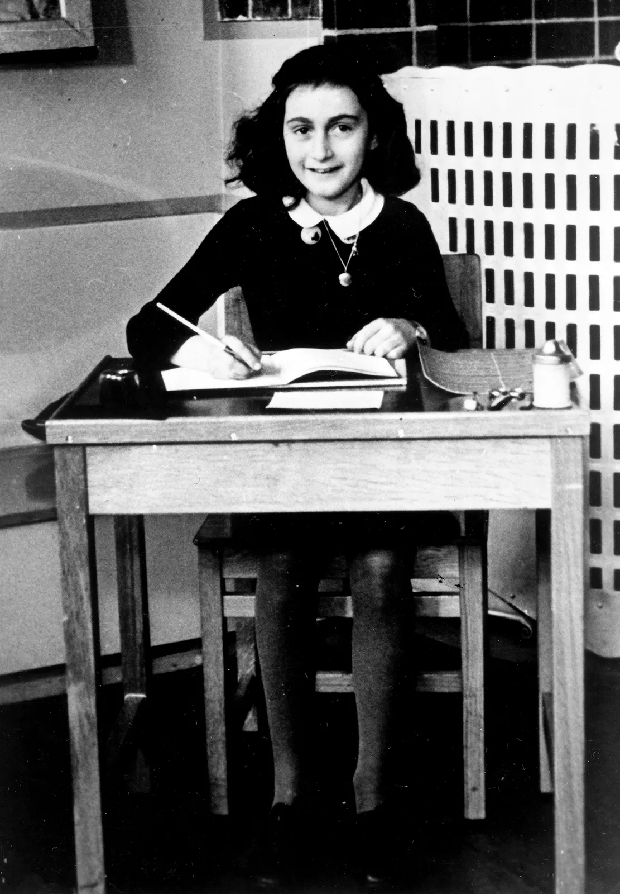
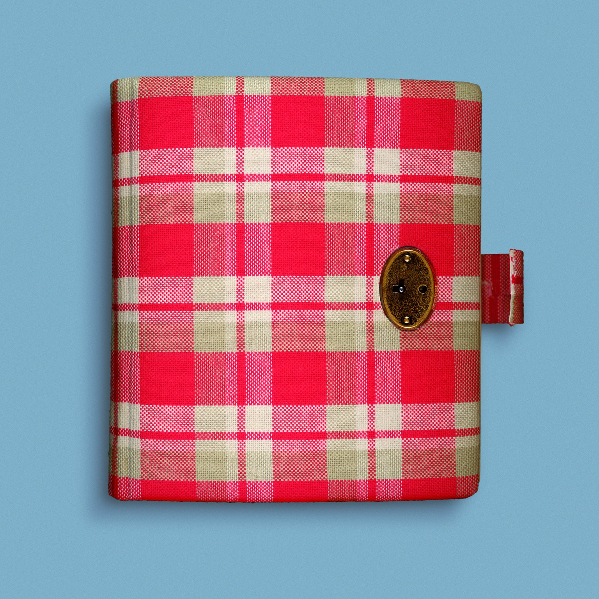

Jewish Anne Frank hid in 1942 from the Nazis during the occupation of the Netherlands. Two years later she was discovered. In 1945 she died in the Bergen-Belsen concentration camp.
Anne’s first years
Anne Frank was born in the German city of Frankfurt am Main in 1929. Anne’s sister Margot was three years her senior. Unemployment was high and poverty was severe in Germany, and it was the period in which Adolf Hitler and his party were gaining more and more supporters. Hitler hated the Jews and blamed them for the problems in the country. He took advantage of the rampant antisemitic sentiments in Germany. The hatred of Jews and the poor economic situation made Anne's parents, Otto and Edith Frank, decide to move to Amsterdam. There, Otto founded a company that traded in pectin, a gelling agent for making jam.
"Anne keeps a diary On her thirteenth birthday, just before they went into hiding, Anne was presented with a diary. During the two years in hiding, Anne wrote about events in the Secret Annex, but also about her feelings and thoughts. In addition, she wrote short stories, started on a novel and copied passages from the books she read in her Book of Beautiful Sentences. Writing helped her pass the time. When the Minister of Education of the Dutch government in England made an appeal on Radio Orange to hold on to war diaries and documents, Anne was inspired to rewrite her individual diaries into one running story, titled Het Achterhuis (The Secret Annex)."

Nazi Germany invades the Netherlands
Before long, Anne felt right at home in the Netherlands. She learned the language, made new friends and went to a Dutch school near her home. Her father worked hard to get his business off the ground, but it was not easy. Otto also tried to set up a company in England, but the plan fell through. Things looked up when he started selling herbs and spices in addition to the pectin. On 1 September 1939, when Anne was 10 years old, Nazi Germany invaded Poland, and so the Second World War began. Not long after, on 10 May 1940, the Nazis also invaded the Netherlands. Five days later, the Dutch army surrendered. Slowly but surely, the Nazis introduced more and more laws and regulations that made the lives of Jews more difficult. For instance, Jews could no longer visit parks, cinemas, or non-Jewish shops. The rules meant that more and more places became off-limits to Anne. Her father lost his company, since Jews were no longer allowed to run their own businesses. All Jewish children, including Anne, had to go to separate Jewish schools.
"The Nazis took things further, one step at the time. Jews had to start wearing a Star of David on their clothes and there were rumours that all Jews would have to leave the Netherlands. When Margot received a call-up to report for a so-called ‘labour camp’ in Nazi Germany on 5 July 1942, her parents were suspicious. They did not believe the call-up was about work and decided to go into hiding the next day in order to escape persecution. In the spring of 1942, Anne’s father had started furnishing a hiding place in the annex of his business premises at Prinsengracht 263. He received help from his former colleagues. Before long, they were joined by four more people. The hiding place was cramped. Anne had to keep very quiet and was often afraid. "
Anne started rewriting her diary, but before she was done, she and the other people in hiding were discovered and arrested by police officers on 4 August 1944. The police also arrested two of the helpers. To this day, we do not know the reason for the police raid. Despite the raid, part of Anne’s writing was preserved: two other helpers took the documents before the Secret Annex was emptied by order of the Nazis.

Anne’s diary becomes world famous
Anne’s diary becomes world famous Anne's writing made a deep impression on Otto. He read that Anne had wanted to become a writer or a journalist and that she had intended to publish her stories about life in the Secret Annex. Friends convinced Otto to publish the diary and in June 1947, 3,000 copies of Het Achterhuis (The Secret Annex) were printed. And that was not all: the book was later translated into around 70 languages and adapted for stage and screen. People all over the world were introduced to Anne's story and in 1960 the hiding place became a museum: the Anne Frank House. Until his death in 1980, Otto remained closely involved with the Anne Frank House and the museum: he hoped that readers of the diary would become aware of the dangers of discrimination, racism, and hatred of Jews.
Anne is deported to Auschwitz Via the offices of the Sicherheitsdienst (the German security police), a prison in Amsterdam, and the Westerbork transit camp, the people from the Secret Annex were put on transport to the Auschwitz-Birkenau concentration and extermination camp. The train journey took three days, during which Anne and over a thousand others were packed closely together in cattle wagons. There was little food and water and only a barrel for a toilet. Upon arrival at Auschwitz, Nazi doctors checked to see who would and who would not be able to do heavy forced labour. Around 350 people from Anne's transport were immediately taken to the gas chambers and murdered. Anne, Margot and their mother were sent to the labour camp for women. Otto ended up in a camp for men.
Anne dies from exhaustion in Bergen-Belsen In early November 1944, Anne was put on transport again. She was deported to the Bergen-Belsen concentration camp with Margot. Their parents stayed behind in Auschwitz. The conditions in Bergen-Belsen were horrible too. There was a lack of food, it was cold, wet and there were contagious diseases. Anne and Margot contracted typhus. In February 1945 they both died owing to its effects, Margot first, Anne shortly afterwards. Anne’s father Otto was the only one of the people from the Secret Annex to survive the war. He was liberated from Auschwitz by the Russians and during his long journey back to the Netherlands he learned that his wife Edith had died. Once in the Netherlands, he heard that Anne and Margot were no longer alive either.